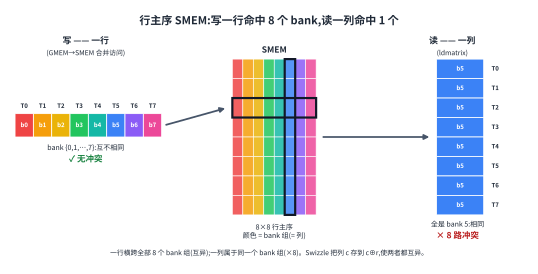
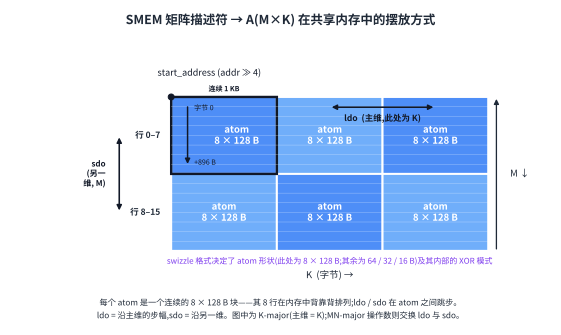
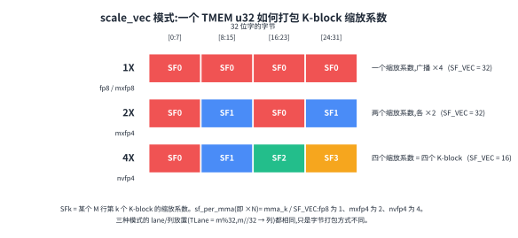

Tensor Core Operand Layouts Across GPU Generations#
Overview
Across Ampere, Hopper, and Blackwell, the Tensor Core still performs the same high-level operation:
D = A B + C.What changes from one generation to the next is how operands reach the Tensor Core, which tile shapes and dtypes are supported, and where the accumulator lives.
Ampere uses warp-level register fragments. Shared memory tiles are loaded into the fragment with
ldmatrix, and the accumulator stays in registers.Hopper lets
wgmmaread operands directly from shared memory through matrix descriptors. The descriptor names the shared-memory swizzle format that the Tensor Core expects.Blackwell keeps the shared-memory operand path but moves the accumulator into TMEM. Block-scaled MMA also stages its scale factors through TMEM.
Two memory constraints remain present across all generations: global memory coalescing and shared memory bank conflicts.
The Tensor Core operation looks stable from far away. It multiplies tiles of A and B, adds an accumulator C, and produces D. That form has been the same since Volta.
The details around that operation have not stayed fixed. A kernel that is fast on one generation may be slow on the next. A kernel that uses the wrong layout may also compute the wrong answer, even if the logical math still says D = A B + C. The reason is that the Tensor Core does not consume abstract matrices. It consumes operands in very specific hardware layouts.
This chapter follows that layout contract across three generations. Ampere exposes the Tensor Core through warp-level register fragments. Hopper moves the input operands to shared memory descriptors. Blackwell keeps shared memory operands but moves the accumulator into TMEM. The operation is still matrix-multiply-accumulate, but the path into and out of the Tensor Core changes each time.
The layout notation from the Data Layout chapter is the language we use to describe these contracts. The Blackwell TMEM details are covered separately in Special Memory: TMEM.
Two Constraints That Never Went Away#
Before the Tensor Core is involved, two ordinary memory constraints already shape the layout of a GPU kernel.
The first is global memory coalescing. When the 32 lanes of a warp issue a global memory load, the memory system wants the addresses to fall into a small number of contiguous, aligned memory segments. If the addresses are scattered, the warp load becomes several memory transactions. The same logical data movement takes more bandwidth and more time.
The second is shared memory bank conflicts. Shared memory is divided into 32 banks. If lanes in a warp access different addresses that map to the same bank, those accesses cannot all be served at once. The hardware serializes them. A layout that looks harmless as a flat shared memory array can therefore be slow because of its bank pattern.
Swizzling is the usual way to fix the shared memory side. The logical tile stays the same, but the physical address mapping is permuted so that the access pattern spreads across banks instead of stacking onto one bank.
These two constraints apply even to kernels that never use Tensor Cores. Tensor Core kernels add a third constraint: the operands must be arranged in the layout expected by the Tensor Core instruction itself. The rest of this chapter is about how that third constraint changes across Ampere, Hopper, and Blackwell.
Ampere: Register Fragments over Warp Lanes#
On Ampere-class GPUs, the main Tensor Core instruction is the warp-level mma.sync.aligned.m16n8k* family. The important fact is where the instruction reads and writes data: registers.
A, B, and the C or D accumulator are all per-thread register fragments distributed across the 32 lanes of a warp. Shared memory is only the staging area. Before the MMA can run, the operand tile must be moved from shared memory into the exact register fragment layout expected by the instruction.
The data path looks like this:
SMEM to registers with ldmatrix
registers to registers with mma.sync
registers back to SMEM with ordinary stores
Most of the Ampere layout story follows from this path. The kernel must store the tile in shared memory in a form that can be loaded efficiently, then use ldmatrix to produce the register fragment required by mma.sync.
What the Ampere Tensor Core Expects#
The Ampere Tensor Core reads register fragments built from 8 by 8 subtile units. These are the units that ldmatrix loads and that the MMA consumes.
Take mma.m16n8k16 with fp16 or bf16 inputs and fp32 accumulation as the concrete case. The accumulator tile has shape 16 by 8. It is distributed across the 32 lanes in a fixed pattern.
For the C or D accumulator, lane l holds rows:
l / 4
l / 4 + 8
and columns:
2 * (l % 4)
2 * (l % 4) + 1
So each lane owns four fp32 accumulator values: two rows from the two 8-row halves, crossed with two adjacent columns. Four consecutive lanes cover the eight columns of one row.
The A operand uses the same M-side row carve. The K dimension is spread across l % 4 and across the registers held by the lane. For fp16 or bf16, each 32-bit register packs two K values.
The B operand uses a matching K placement and spreads the N side across the lane group and registers.
The exact details vary by instruction shape and dtype, but the principle is fixed. The Tensor Core expects a particular per-lane register fragment. If the values are not in those registers in that pattern, the instruction will multiply the wrong elements.
In layout notation, the m8n8 fragment is the kind of pattern written with named lane axes, for example:
S[(8, 4, 2) : (4@laneid, 1@laneid, 1@m)]
The two laneid iters together describe how the row and column pieces are scattered across lanes, while the final m component describes the per-lane register slot.
Writing the Ampere Fragment Back#
After mma.sync finishes, the accumulator is still a register fragment. The epilogue has to move that fragment out.
On Ampere, there is no dedicated reverse of ldmatrix. The kernel uses ordinary per-thread stores, sometimes with warp shuffles or local rearrangement before the store, to write the accumulator into shared memory or global memory in a useful layout.
This keeps the Ampere model simple but also exposes a lot of layout work to the kernel. The input side uses ldmatrix to create the fragment. The compute instruction reads and writes register fragments. The output side is handled by ordinary stores from those fragments.
Swizzle on Ampere#
Ampere kernels already need shared memory swizzles. The reason is that the shared memory tile is usually written in one access pattern and read in another.
Suppose a tile is filled from global memory along rows. A row-major layout makes that write coalesced and bank friendly. But ldmatrix may later read the tile in a pattern that effectively walks down columns or across 8 by 8 subtiles. With a plain row-major layout, those reads can stack onto the same shared memory bank.
For a simple (8, 64) float16 tile, one row is:
64 * 2 bytes = 128 bytes
which is exactly one full shared memory bank line. Walking down a fixed column advances by 128 bytes each row, so the bank index repeats. Eight rows can collapse onto the same bank, creating an 8-way conflict.
Changing to a plain column-major layout does not solve the whole problem. It usually moves the conflict to the other access. The row write becomes worse while the column-style read becomes better.
The XOR swizzle fixes this by making the physical column depend on the row. A simple version is:
physical_col = logical_col xor row
The logical tile is unchanged. The physical placement in shared memory is permuted so that both the row-style write and the Tensor Core read pattern can avoid bank conflicts.
On Ampere, this swizzle is usually expressed through hand-written shared memory index math. Later generations make it part of the descriptor format used by the hardware engines.

What the Hopper Tensor Core Expects#
A Hopper shared memory matrix descriptor is a compact description of a matrix tile in shared memory. It tells wgmma how to turn logical operand coordinates into shared memory addresses.
The descriptor includes fields such as:
start address
leading dimension offset
stride dimension offset
swizzle mode
base offset
The exact interpretation depends on the operand major mode. For a K-major tile, one stride advances along K and the other advances along M. For an MN-major tile, the roles are swapped.
The swizzle mode is one of the shared memory descriptor formats, such as:
SWIZZLE_NONE
SWIZZLE_32B
SWIZZLE_64B
SWIZZLE_128B
The swizzle mode determines two things. It determines the atom shape used by the descriptor, and it determines the XOR permutation applied inside that atom. For example, the 128-byte swizzle mode treats the operand as a grid of 8-row by 128-byte atoms, with the swizzle applied inside each atom.
The kernel still has to place the bytes correctly. TMA usually fills the shared memory tile, and the TMA descriptor must use the same swizzle format that the wgmma descriptor later names. If TMA writes a 128-byte swizzled tile, the wgmma descriptor must read it as a 128-byte swizzled tile. If the descriptor and the data disagree, the Tensor Core will read scrambled operands.
This is the main shift from Ampere. The swizzle is no longer only hidden inside hand-written shared memory indexing. Hopper makes it a first-class descriptor format. The TMA load that writes the tile and the wgmma instruction that reads the tile can both name the same format.

Hopper Output Still Uses Registers#
Hopper changes the input path, but the accumulator still lives in registers.
A wgmma instruction writes the accumulator into a per-thread register fragment. The exact fragment size and register count depend on the instruction shape, such as m64nNk16, where N changes the number of accumulator registers. But the basic idea is the same as Ampere: the epilogue consumes a register fragment.
So Hopper has a mixed layout model. The input operands can come directly from shared memory descriptors, with swizzle described by the hardware. The output accumulator remains a register layout problem.
Blackwell changes that output side.
Blackwell: tcgen05 and TMEM#
Blackwell keeps the shared memory descriptor idea for the data operands. A and B are still prepared in shared memory in the layout the Tensor Core expects. Some modes can also read an A operand from TMEM.
The major change is the accumulator. tcgen05.mma writes its accumulator into Tensor Memory, or TMEM, instead of keeping it as a long-lived register fragment. During the compute phase, the accumulator stays in TMEM. The epilogue later uses tcgen05.ld to load it back into registers.
This moves the output layout problem from registers to TMEM. The kernel must allocate TMEM, choose the right TMEM layout, wait for MMA completion, and then use the matching tcgen05.ld path to recover the accumulator fragment for the epilogue.
The details of how cta_group::1 and cta_group::2 split the accumulator across one or two CTAs are covered in Tensor Cores: tcgen05. The layout that is most different from earlier generations is the block-scaled scale-factor layout.
Scale Factor Layout in TMEM#
Block-scaled MMA modes, such as mxfp8 and nvfp4, add scale-factor operands. In addition to A and B, the MMA reads:
SFA(M, SFK)
SFB(N, SFK)
where SFK is the number of K scale blocks.
The data operands A and B live in shared memory. The scale factors live in TMEM. That gives them a different movement path.
TMA loads from global memory into shared memory. It does not load directly into TMEM. So scale factors usually move in two steps:
global memory to shared memory with TMA
shared memory to TMEM with tcgen05.cp
Only after that copy are the scale factors in the memory space where tcgen05.mma expects to read them.
The TMEM scale-factor layout uses the TMEM hardware coordinates Lane and Col. In the TIRx layout notation, those axes are written as TLane and TCol.
A 128-row scale vector is compacted into a 32-lane group and then replicated across the four 32-lane windows of TMEM. In layout notation, the core pattern is:
S[(32, sf_per_mma) : (1@TLane, 1@TCol)] + R[4 : 32@TLane]
The shard places the base 32-row group:
TLane = r
TCol = s
The replica term adds copies at lane offsets 0, 32, 64, and 96:
TLane = r + 32 * q, where q in {0, 1, 2, 3}
TCol = s
This is the warpx4 broadcast pattern. The same compact scale-factor group becomes visible across the full 128-lane TMEM space.
There is also byte packing inside the 32-bit TCol cells. The packing depends on the scale_vec mode:
1X: one scale value is broadcast across the 32-bit cell
2X: two scale values are packed, each duplicated
4X: four K-block scale values are packed

This packing has no direct Ampere or Hopper analogue because those generations do not have TMEM scale-factor operands for tcgen05 block-scaled MMA.
In cta_group::2, scale factors follow the data they scale. SFA scales A, so it is split by M across the two CTAs, matching the A rows owned by each CTA. SFB scales B, which is shared by the two CTA halves of the computation, so SFB is multicast to both CTAs (Tensor Cores: tcgen05).
A Recurring Fragment#
Even though the surrounding memory path changes, one structure keeps returning: the m8n8-style register fragment.
On Ampere, ldmatrix builds that fragment so mma.sync can read it.
On Hopper, wgmma writes its accumulator as a register fragment for the epilogue.
On Blackwell, the accumulator lives in TMEM during compute, but tcgen05.ld loads it back into a register fragment before the epilogue processes and stores it (Special Memory: TMEM).
So the fragment does not disappear. Its role changes. Earlier generations keep the accumulator there for the whole compute phase. Blackwell uses it mostly at the boundary between TMEM and the epilogue.
The Throughline#
On Ampere, the kernel explicitly builds Tensor Core register fragments. Shared memory swizzle is mostly the kernel’s responsibility through index math.
On Hopper, the Tensor Core can read operands directly from shared memory through matrix descriptors. Swizzle becomes a named descriptor format shared by TMA and wgmma.
On Blackwell, the input side still uses shared memory operands, but the accumulator moves to TMEM. Block-scaled MMA also adds scale-factor operands that must be staged into TMEM.
The descriptors do not remove layout work. They make the contract explicit. The kernel still has to ensure that the data movement path, the memory layout, and the Tensor Core instruction all agree. A TMA descriptor that writes a swizzled SMEM tile, an MMA descriptor that reads that tile, and the layout attached to the buffer must all describe the same physical arrangement.
If any one of those pieces disagrees, the hardware will still run. It will just read the wrong bytes or read them slowly. That is why layout is not decoration around a Tensor Core kernel. It is part of the instruction interface.